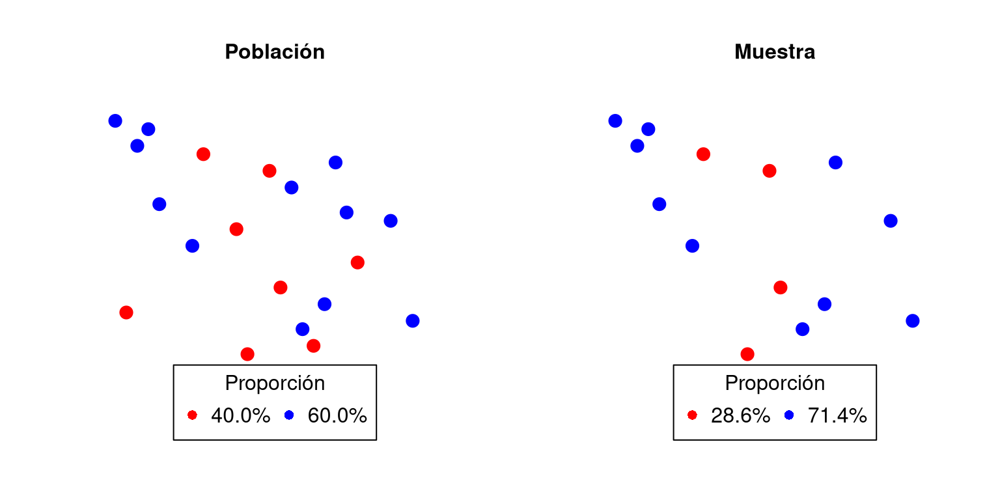
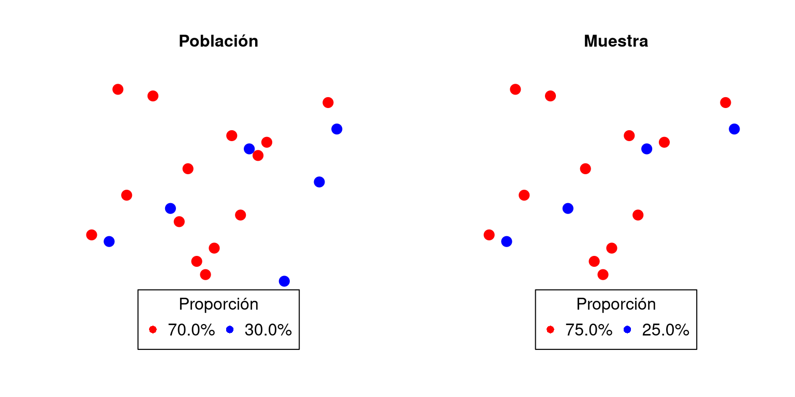
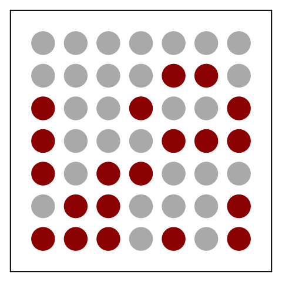
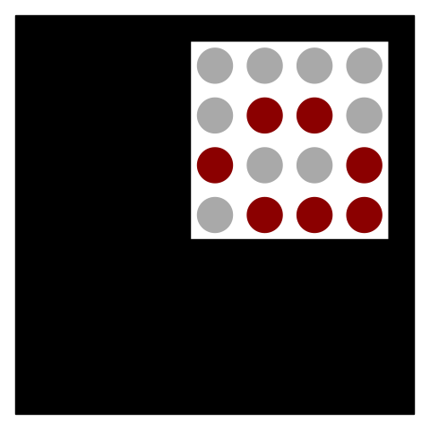

Unidad 1 Tópicos básicos de estadística
1.1 Conceptos
En esta sección se recordarán algunos conceptos claves de la estadística que están asociados a las ciencias cognitivas. Luego, se ahondará en las técnicas básicas de visualización para el estudio de estos.
Dato: El dato es la unidad básica de la estadística, el cual, corresponde a cualquier evento o hecho que no ha sido dotado de significado, es decir, un hecho del cual no se puede dar interpretación alguna (Brachman & Levesque, 2004).
Un ejemplo de este concepto, es cuando tratamos de responder la pregunta ¿por qué al caminar nos detenemos al encontrarnos con un semáforo en rojo? ¿Cuál es el dato? ¿Cuál es el significado?
Información:
Información = Datos + Significado
Por otro lado, los datos existen independiente de quien observa, y cuando una persona adquiere datos y los dota de significado, estos se convierten en información (Brachman & Levesque, 2004). Otra forma de entenderlo es:
Información = Datos + Reglas para decodificar
En el ejemplo anterior, el decodificador es la persona que va caminando, y el significado (reglas para decodificar) que le damos al semáforo al estar en rojo viene de las reglas sociales que indican como actuar en determinadas situaciones.
Tipos de variables: El concepto de datos está fuertemente ligado a su naturaleza, es decir, el contexto de estudio que los rodea. En este sentido, los datos están asociados a lo que llamamos variable (“naturaleza del dato”, “los tipos de valores que adquiere el dato”), las cuales, se pueden clasificar la siguiente manera (Anderson et al., 2008, página 7):
- Cualitativas (Nominales y Ordinales): variables no numéricas que pueden o no llevar un orden, respectivamente.
- Cuantitativas (Discretas y Continuas): variables numéricas que pueden o no ser enumeradas, respectivamente.
Ejercicio 1.1 Determinar la clasificación de las siguientes variables: tiempo, dinero, altura, cantidad de vecinos en el lugar donde vivo, grado de conformidad (conforme, medianamente conforme, nada conforme) respecto a un servicio, color de pelo de un grupo de personas.
Población y Muestra: En investigación la recolección de datos constituye una de las tareas iniciales antes de aplicar cualquier tipo de técnica de análisis. La disciplina de estadística proporciona métodos para organizar y resumir datos y de sacar conclusiones basadas en la información obtenida.
Una investigación típicamente se enfocará en una colección bien definida de objetos que constituyen una población de interés. Cuando la información deseada está disponible para todos lo objetos de la población, se tienen lo que se llama un censo. Las restricciones de tiempo, dinero y otros recursos escasos casi siempre hacen que un censo sea infactible. En su lugar, se selecciona un subconjunto de la población, una muestra, de manera prescrita (Devore, 2008, página 2).
- Población: La población es el conjunto de todos los sujetos de interés en un estudio.
- Muestra: La muestra es un subconjunto de la población a través de los cuales el estudio recoge los datos.
Ejercicio 1.2 Determine la población y muestra de los siguientes enunciados.
- Se realiza un sondeo para determinar los rubros con mayor inflación de venta de mercado en Santiago, para ello se estudia el rubro con mayor ingreso líquido de ventas, en algunas de las comunas de Santiago.
- La encuesta ENUSC elabora anualmente un informe respecto a la seguridad ciudadana, para ello, se contacta a una cantidad de personas determinadas de cada región del país, dando así, resultados a nivel nacional y regional.
Parámetro y Estadístico: Ambos conceptos están ligados a los de población y muestra de la siguiente manera (Anderson et al., 2008, página 83):
- Parámetros: corresponde a una característica de resumen de la población.
- Estadísticos: corresponde a una característica de resumen de la muestra.
En la figura 1.1 se observa un ejemplo de círculos rojos y azules tanto para la población como para una muestra de esta. Dado que la población contiene todos los datos (censo), es posible apreciar todos los círculos con sus colores. Por otro lado, la muestra es solo una pequeña parte de la población, es decir, seleccionan algunos de los círculos al “azar” con sus respectivos colores.
Un ejemplo de los conceptos definidos es la proporción de círculos rojos. En caso de que estuviésemos interesados en dicha característica en la población, se hablaría de un parámetro, mientras que, si se está interesado en la muestra se hablaría de estadístico.

Figura 1.1: Parámetro y estadístico
Estimador y Estimación: Una extensión de los conceptos de parámetro y estadístico, son los de estimador y estimación, para los cuales, se hace la siguiente distinción:
Estimador: Un estimador es un estadístico usado para aproximar (incertidumbre) el valor de un parámetro. Usualmente no cambia la técnica entre la población y la muestra, por ejemplo, si deseo aproximar la proporción de bolitas rojas en la población, se usaría la proporción de bolitas rojas en la muestra.
Estimación: Una estimación es el número que resulta de aplicar el estimador a una muestra particular. Esto difiera levemente de la definición anterior, ya que en términos estrictos, el estimador solo es la “fórmula”, y la estimación es el valor resultante al aplicar la fórmula. Sin embargo, hoy en día es muy común encontrar textos en donde el estimador se considera tanto para la fórmula como para el valor obtenido.
Considerando un ejemplo similar al de la figura 1.2) y, estableciendo que el parámetro a estudiar es la proporción de círculos rojos, es natural pensar que en la muestra (estadístico) el comportamiento debería ser un reflejo al de la población. La intención de decir “usaremos la proporción de círculos rojos en la muestra para deducir como es la proporción de círculos rojos en la población” corresponde al estimador (otro tema es argumentar si esto es correcto o no), mientras que, el cálculo del estimador (cálculo de la proporción de círculos rojos en la muestra) lleva el nombre de estimación.
Respecto a lo anterior:
- ¿Cuál sería la estimación de los círculos rojos?
- Si observamos la muestra de la figura 1.1 y 1.2, ¿cuándo diríamos que una estimación es buena?

Figura 1.2: Estimador y estimación
Ejemplo 1.1 Suponga que está interesado en estudiar el promedio del porcentaje de desempleo anual en Chile en el periodo 2010-2065. Para aproximar este valor, se hará uso de los registros de desempleo anual de los últimos 16 años, para luego calcular el promedio muestral. La fórmula para calcular el promedio muestral en este caso, es el cuociente entre la diferencia entre el valor máximo y mínimo y, el logaritmo natural de la suma de los registros, dando como resultado un valor de 15%. A continuación, determine la población, muestra, parámetro, estadístico, estimador y estimación.
Población: Todos los registros de desempleo anual en Chile entre 2010 y 2065.
Muestra: Los últimos 16 registros de desempleo anual en Chile.
Parámetro: El promedio anual del porcentaje de desempleo en Chile entre 2010 y 2065.
Estadístico: El promedio anual del porcentaje de los últimos 16 registros de desempleo en Chile.
Estimador: Sean \(V_i\) con \(i=1,\ldots,16\) los últimos 16 registros de desempleo anual en Chile. Luego, el estimador es el siguiente:
\[ \frac{\max(V_i) - \min(V_i)}{\ln\left(\displaystyle\sum_{i=1}^{16} V_i\right)} \]
Estimación: El valor de 15% obtenido al aplicar el estimador a la muestra.
Algunas consideraciones importantes son:
- El estadístico siempre es la misma característica de la población pero aplicada a la muestra. Sin embargo, puede cambiar la fórmula matemática (estimador) que se utiliza para poder ser calculada (en la muestra). Esto cobra más sentido cuando la característica que se estudia es más compleja, por ejemplo, crecimiento económico, ya que no tiene una forma estándar de ser calculada (depende de las condiciones de la problemática).
- El estimador siempre es la fórmula matemática que debe ser aplicada para poder cuantificar el estadístico.
Ejercicio 1.3 Para los siguientes enunciados determine: población, muestra, parámetro, estadístico, estimador y estimación.
Suponga que esté interesado en determinar el promedio anual de la esperanza de vida de los hombres en el periodo 2002-2027, sin embargo no cuenta con todos los datos. Para aproximar este valor, se hará uso de los registros anuales de esperanza de vida de los hombres en Chile entre 2010 y 2017, para luego calcular el promedio muestral. La fórmula para poder determinar el promedio muestral es obtener el cuociente entre el promedio aritmético de los datos y, la raíz cuadrada de la suma de los datos, dado como resultado 79.12 años
Suponga que está interesado en estudiar el promedio histórico del monto de las deudas comerciales (considere la deuda comercial como la suma de la deuda comercial de hombres y mujeres), para ello, usted aproxima este valor mediante el uso de los registros anuales de deuda comercial de hombres y mujeres entre 2010 y 2022, para luego calcular el promedio muestral. La fórmula para calcular el promedio muestral en este caso, es el cuociente entre la suma de los valores cúbicos de los registros y, el logaritmo natural de la suma de los registros al cuadrado, dando como resultado un valor de 15.12 billones de pesos.
Desea determinar la mediana histórica de la edad de los distintas especies de árbol que habitan la región de la Araucanía, para ello, usted aproxima este valor mediante el uso de los registros de edad de los árboles en la región entre 2010 y 2022, para luego calcular la mediana muestral, haciendo uso de la mediana Hodges-Lehmann. La fórmula para calcular dicha medida, es el promedio de todas las medianas de pares de observaciones. El resultado final es un valor de 76.4 años.
Variabilidad muestral: Efectivamente, la estimación de un parámetro está determinada por la muestra con la que se trabaja. La forma en la que se elige una muestra es azarosa (que no se puede intencionar en su totalidad), por lo que es imposible saber de antemano si la estimación será buena o mala respecto al parámetro (error de estimación). En estadística, la forma en la que se elige o genera una muestra puede llegar a ser muy compleja, siendo un tema que está fuera del alcance de este curso.
El concepto detrás de esto es la variabilidad muestral, el cual, indica que dependiendo de la muestra que se obtenga de la población, esta se comportará distinto en relación al estadístico (igualmente para el valor del estimador: estimación). Para ilustrar esto, observemos la figura 1.3.
¿Cuál es la proporción de círculos rojos en la población reflejada en la figura ?

Figura 1.3: Población
Luego,
¿qué podríamos inferir sobre el color predominante en la población en base a la muestra de la figura 1.4?
Figura 1.4: Muestra 1
¿Y ahora? (Figura 1.5)

Figura 1.5: Muestra 2
Efectivamente, diferentes muestras se comportan de manera diferente, es decir, la estimación depende de la selección de la muestra. Esto se denomina como variabilidad muestral.
Representatividad y sesgo de la muestra:
Representatividad: Comúnmente se escucha hablar de que una muestra debe ser representativa respecto de la población, algo muy similar a lo presentado en el punto anterior. Sin embargo, este concepto no tiene sustento matemático, ya que, para poder verificar que una muestra es representativa se debe conocer a toda la población (la característica de estudio), lo cual en la práctica no ocurre. Y en caso de que se conociesen todos los datos de la población, sería absurdo calcular la estimación de un parámetro, ya que podría calcularse directamente el valor del parámetro en cuestión.
Sesgo: Algunas personas utilizan la siguiente frase: “la muestra está sesgada”, lo cual es incorrecto en estadística. El concepto de sesgo no es únicamente propio de la estadística, sin embargo, en esta área, corresponde a una propiedad de los estimadores. Se dice que un estimador es insesgado cuando el valor esperado de este es igual al parámetro. Y al igual que el concepto anterior, no es posible verificarlo en la práctica, aunque si tiene un sustento matemático por detrás.
1.2 Medidas de localización
Los resúmenes visuales de datos son herramientas excelentes para obtener impresiones y percepciones preliminares. Un análisis de datos más formal a menudo requiere el cálculo e interpretación de medidas de resumen numéricas. Es decir, de los datos se trata de extraer varios números resumidos, números que podrían servir para caracterizar el conjunto de datos. Las tres medidas de resumen más utilizadas son la media, la mediana y la moda.
1.2.1 Media
Para un conjunto dado de números \(x_1, x_2, x_3, \ldots, x_n\), la medida más conocida y útil es la media o promedio aritmético. Usualmente se asume que los números \(x_i\) hace parte de una muestra, por lo que a este promedio se le connota como media muestral y se denota con por \(\bar{x}\).
De lo anterior, la media muestral (\(\bar{x}\)) de una conjunto de datos \(x_1, x_2, x_3, \ldots, x_n\) está dada por (Devore, 2008, página 25)
\[\begin{equation} \bar{x} = \frac{x_1 + x_2 + \cdots + x_n}{n} = \frac{\displaystyle\sum_{i=1}^{n}x_i}{n} \tag{1.1} \end{equation}\]En R, para obtener el promedio aritmético de los datos se hace uso de la función mean(). A continuación, un ejemplo.
## [1] 0.2727273El promedio (\(\bar{x}\)) representa el valor central de las observaciones incluidas en una muestra. Sin embargo, esta medida puede llegar a ser inapropiada en algunas circunstancias, específicamente cuando existen valores extremos. Un ejemplo de esto, es el promedio de los ingresos (el caso de Chile), ya que, es común que unos cuantos afortunados ganen cantidades astronómicas, por lo que el uso del ingreso promedio como medida de resumen puede ser engañoso (otro ejemplo, es la valorización de BitCoin al dólar estadounidense).
A pesar de lo anterior, esta medida sigue siendo ampliamente utilizada, en gran medida porque existen muchas poblaciones para las cuales un valor extremo en la muestra sería altamente improbable (ejemplo: tipo de cambio del dólar y el euro).
Ejercicio 1.4 Respecto a la base Tasa Euro/Dólar, utilice el comando colMeans() para obtener la media de todas las variables asociadas a la tasa de conversión (ignore la columna asociada a la variable fecha). Interprete.
Ejercicio 1.5 Obtenga de la media del precio por hora de la electricidad, en la base Precios de electricidad. Utilice el comando na.omit() para no considerar los valores faltantes. Interprete.
Ejercicio 1.6 Considerando la base de datos Pacientes, determine la media del nivel de colesterol por sexo. Interprete.
1.2.2 Mediana
La palabra mediana es sinónimo de “medio” y la mediana muestral es en realidad el valor medio una vez que se ordenan las observaciones de la más pequeña a la más grande (Devore, 2008, página 26).
La mediana muestral se obtiene ordenando primero las observaciones de la más pequeña a la más grande. Por lo tanto,
- Si la cantidad de datos es impar, entonces, la mediana es igual al número en la posición \(\frac{n+1}{2}\).
- Si la cantidad de datos es par, entonces, la mediana es el promedio entre los números ubicados en las posiciones \(\frac{n}{2}\) y \((\frac{n}{2}+1)\).
Para poder calcular la mediana en R, se debe hacer uso del comando median(), tal como se muestra a continuación.
# Conjunto de datos (cantidad impar)
x = c(1,2,3,4,5,6,7,-3,-1,-2,5.4,9.3,0)
# Mediana del conjunto de datos
median(x)## [1] 3# Conjunto de datos (cantidad par)
x = c(1,2,3,4,5,6,7,-3,-1,-2,5.4,9.3)
# Mediana del conjunto de datos
median(x)## [1] 3.5En ambos casos, se entiende que, ordenando los datos de menor a mayor (en una recta real), tanto a la derecha como izquierda de la mediana se encuentra la misma cantidad de datos.
Ejercicio 1.7 Obtenga la mediana de las distintas variables (cuando corresponda) de la base de datos Pacientes. Interprete.
1.2.3 Moda
La moda es la medida más intuitiva de las tres, ya que simplemente corresponde al valor que se presenta con mayor frecuencia (Anderson et al., 2008, página 85). Para ilustrar esto, veamos el siguiente código en R:
# El siguiente vector contiene la información de la cantidad
# de hermanos de un determinado grupo de personas
hermanos = c(1,2,3,1,2,3,3,3,4,1,7,1,0,0,1,0,2)
# Utilizando el comando table podemos obtener la frecuencia de
# cada una de las distintas observaciones
table(hermanos)## hermanos
## 0 1 2 3 4 7
## 3 5 3 4 1 1Como resultado se aprecia que la cantidad de hermanos que más se repita dentro del grupo de personas es de 5.
Ejemplo 1.2
Cree un objeto que guarde la tabla de frecuencias de la variable Open de la base de datos Tasa Euro/Dólar (sin imprimir la tabla).
Ya que es imposible buscar manualmente la frecuencia más alta, utilice el comando
which.max()para encontrar la posición en la que se ubica esta, ingresando como argumento la tabla anteriormente guardada. Guarde este valor en un objeto.## 1.336005 ## 3067Finalmente, consulte de manera directa en la tabla en valor de la frecuencia en la posición calculada en el paso anterior. Interprete.
## 1.336005 ## 6Esto quiere decir, que el valor de apertura de la tasa EUR/USD que más se repite históricamente es 1.336005 con una frecuencia de 6.
Nota: En caso de que existan dos o más valores con las frecuencias más altas, el programa solo reporta la primera, según el orden lexicográfico de las columnas.
Ejercicio 1.8 Considerando la base de datos Pacientes, determine la moda de las variables cualitativas. Interprete.
Nota: En el documento se usará simplemente el nombre de la medida de localización (media, moda, mediana) para referirse a la medida de localización muestral. En casos determinados se hará la distinción entre el caso muestral y poblacional, según corresponda (ejemplo: media poblacional, media muestral).
1.3 Medidas de escala
Al momento de reportar la media solo se obtiene información parcial sobre el un conjunto de datos. Diferentes muestras o poblaciones pueden tener medidas idénticas de localización y aún diferir entre sí en otras importantes maneras. La tabla 1.1 muestra las notas obtenidas por los alumnos de 2 dos cursos con la misma media, aunque el grado de dispersión (variabilidad) en torno a esta es diferente para ambas muestras, es decir, en el Curso 1 las se observan notas más bajas y altas que el Curso 2.
| Curso 1 | Curso 2 | Curso 3 |
|---|---|---|
| 3.0 | 4.0 | 3.0 |
| 4.5 | 5.0 | 7.0 |
| 5.0 | 6.0 | – |
| 5.5 | – | – |
| 7.0 | – | – |
1.3.1 Rango
La medida más simple de variabilidad en una muestra es el rango, el cual es la diferencia entre los valores muestrales más grande y más pequeño (Devore, 2008, página 32). El rango de las notas del curso 1 en la tabla 1.1 es más grande que el del curso 2, lo que refleja más variabilidad en la primer muestra que en la segunda. Un defecto del rango, no obstante, es que depende de solo las dos observaciones más extremas y hace caso omiso de las posiciones de los valores restantes. Los cursos 1 y 3 tienen rangos idénticos, aunque cuando se toman en cuenta las observaciones entre los dos extremos, existe mucho menos variabilidad o dispersión en la tercera muestra que en la primera.
Ejemplo 1.3 Obtener el rango de la tasa de apertura histórica del EUR/USD de la base de datos Tasa Euro/Dólar.
# Utilizando el comando range() se obtienen los valores mínimo y máximo
# de la variable en cuestión
(rango = range(datos$Open))## [1] 0.959619 1.598184## [1] 0.638565El valor máximo siempre estará en la segunda posición y le mínimo en la segunda.
Ejercicio 1.9 Utilizando la base de datos Pacientes, determine el rango de las variables cuantitativas. Interprete.
Ejercicio 1.10 Determine el rango de la fechas de medición en los precios de electricidad en la base Precios de electricidad. Interprete.
1.3.2 Varianza y desviación estándar
Las medidas principales de variabilidad implican las desviaciones de la media,
\[\begin{equation} x_1 - \bar{x}, x_2 - \bar{x}, x_3 - \bar{x}, \ldots, x_n - \bar{x}. \tag{1.2} \end{equation}\]Es decir, las desviaciones de la media se obtienen restando \(\bar{x}\) de cada una de las \(n\) observaciones muestrales. Una desviación será positiva si la observación es más grande que la media (a la derecha de la media sobre la recta real) y negativa si la observación es más pequeña que la media (a la izquierda de la media sobre la recta real). Si todas las desviaciones son pequeñas en magnitud, entonces todos los valores de la muestra son cercanos a la media y hay poca variabilidad. Alternativamente, si algunas de las desviaciones son grandes de magnitud, entonces algunos de los de los valores de la muestra están lejos de la media (sobre la recta real) lo que sugiere una mayor variabilidad.
Una forma de resumir las desviaciones sería sumando todas ellas. Sin embargo, es una mala idea, ya que la suma siempre es igual a cero (1.3), ¿alguna idea del por qué?
\[\begin{equation} \text{Suma de las desviaciones en una muestra} = \sum_{i=1}^{n}(x_i-\bar{x}) = 0 \tag{1.3} \end{equation}\]En este sentido, para poder resumir las desviaciones de una muestra evitando el problema mencionado, se elaboran dos expresiones (Devore, 2008, página 32):
- Varianza (muestral):
- Desviación estándar (muestral):
Las unidades correspondientes a la varianza suele causar confusión. Como los valores que se suman para calcular la varianza, \((x_i-\bar{x})^2\), están elevados al cuadrado, las unidades correspondientes a la varianza muestral también están elevadas al cuadrado. Las unidades al cuadrado de la varianza dificulta la compresión e interpretación intuitiva de los valores numéricos de la varianzas. Lo recomendable es entender la varianza como una medida útil para comparar la variabilidad de dos o más variables. Al comparar variables, la que tiene la varianza mayor, muestra más variabilidad. Otra interpretación del valor de la varianza suele ser innecesaria (Anderson et al., 2008, página 94).
La desviación estándar es la raíz cuadrada de la varianza, pero, ¿qué se gana con esto? Al calcular la desviación estándar, las unidades de esta son iguales a de la variable original, por lo que es más fácil de interpretar. Sin embargo, estas dos medidas tiene ciertas limitantes a la hora de comprar la variabilidad de dos variables:
- Es ideal que ambas variable tengan la misma media.
- Las variables deben tener la misma unidad de medida.
No seguir estas recomendaciones puede generar un falsa sensación en la comunicación de resultados.
Ejemplo 1.4 Compare la variabilidad entre la tasa de apertura y la tasa de cierre histórica del EUR/USD presentes en la base de datos Tasa Euro/Dólar, para ello:
Verifique la media de ambas variables la misma
## [1] 1.244338## [1] 1.244363Las tasas son similares hasta el tercer decimal, se asumirá que las medias son iguales
Ya que tienen la misma unidad de medida, calcule la varianza y desviación estándar de cada una. Interprete.
Al calcular la varianza muestral, se observa que la tasa de cierre es levemente menor variabilidad que la tasa de apertura. Similarmente, se observa que la tasa de cierre tiene menor variabilidad que la tasa de apertura.
## [1] 0.01562596 0.01562404## [1] 0.1250038 0.1249962¿Por qué es más clara la interpretación (primer decimal distinto) al utilizar la desviación estándar?
Ejercicio 1.11 Utilice la varianza directamente para comparar la variabilidad de la variables chol, age, trtbps y oldpeak entre hombres y mujeres, en la base Pacientes. Interprete.
Ejercicio 1.12 Utilice la varianza directamente para comprar la variabilidad de los precios de la electricidad entre las primeras y últimas 1000 mediciones, en la base Precios. Interprete.
1.3.3 Coeficiente de variación
Para subsanar el problema de las limitaciones de la varianza y desviación estándar, se encuentra la medida llamada coeficiente de variación (1.6).
\[\begin{equation} CV = \left(\frac{S}{|\bar{x}|}\right)\cdot 100\% \tag{1.6} \end{equation}\]Cuando el valor del coeficiente de variación es cercano a 100% se habla de mayor dispersión (heterogéneo), mientras que un valor cercano a 0% indica menor dispersión (homogéneo), además, se debe considerar que el porcentaje calculado corresponde a la variabilidad respecto a la media de los datos. Sin embargo, no es recomendable usar esta medida cuando el valor de la media es cercano a cero, ya que el CV pierde su significado al tomar valores muy grandes, lo que daría una falsa sensación de dispersión de los datos (Anderson et al., 2008, página 95).
Ejemplo 1.5 En el ejemplo 1.4, se utilizó la varianza para comprar directamente la variabilidad entre la tasa de apertura y la tasa más alta histórica del EUR/USD. Sin embargo, si calculamos las medias de ambas variables se puede verificar que son distintas. Utilice el CV para comprar la variabilidad de ambas variables.
Claramente la media de la tasa más alta es mayor a la media de la tasa de apertura.
## [1] 1.244338 1.249022Al verificarse una de las dos limitantes mencionadas, procedemos a calcular el CV de ambas variables.
CV_Open = sd(datos$Open)/abs(mean(datos$Open))*100
CV_High = sd(datos$High)/abs(mean(datos$High))*100
c(CV_Open, CV_High)## [1] 10.04581 10.06323Se puede observar que el coeficiente de variabilidad de la tasa más alta (10.06%) es mayor a la de la tasa de apertura (10.04%). Por lo tanto, la variabilidad (dispersión) de los datos es más homogénea para la tasa de apertura. Sin embargo, la diferencia es muy pequeña, por lo que la dispersión en relación a la media es similar entre ambas variables.
Ejercicio 1.13 Un docente de la Facultad de Administración y Economía tabuló los puntajes de un test corto de 12 estudiantes. El archivo de Excel se corrompió, perdiendo el puntaje del estudiante número 12. Los puntajes de los primeros 11 estudiantes son:
\[20, 22, 19, 21, 18, 20, 15, 25, 20, 17, 23\]
Afortunadamente, en un informe previo se dejó constancia que el promedio del curso en este test fue de exactamente \(20\) puntos.
- Calcule cuál fue el puntaje del duodécimo estudiante.
- Calcule la varianza para los primeros 6 estudiantes y para los estudiantes del 7 al 12. Interprete los resultados para comparar la variabilidad de ambos grupos, justificando por qué el uso de la varianza es adecuado.
- Vuelva a comparar la variabilidad utilizando el coeficiente de variación.
Ejercicio 1.14 Compare la variabilidad de la presión arterial en reposo y el nivel de colesterol de los pacientes registrados en la base de datos Pacientes. Repita el estudio diferenciado por sexo. Interprete.
Ejercicio 1.15 Utilizando la base de datos Pacientes, compare la variabilidad de la edad de los paciente, según el tipo de dolor de pecho que presentan. Interprete.
Nota: en el documento se usará simplemente el nombre de la medida de escala (rango, varianza, desviación estándar y CV) para referirse a la medida de escala muestral. En casos determinados se hará la distinción entre el caso muestral y poblacional, según corresponda (ejemplo: varianza poblacional, varianza muestral).
1.4 Notación poblacional y muestral
| Poblacional | Muestral | |
|---|---|---|
| Media | \(\mu\) | \(\bar{x}\) |
| Varianza | \(\sigma^2\) | \(S^2\) |
| Desviación estándar | \(\sigma\) | \(S\) |
1.5 Ejercicios
Ejercicio 1.16 Suponga que un analista de mercado desea estimar la media del precio de venta (en millones de pesos) de motocicletas de estilo cruiser en Chile durante la década 2020-2030. Debido a la falta de datos futuros, aproxima este valor recopilando los precios de venta mensuales de los últimos 24 meses. La fórmula definida para calcular este promedio muestral consiste en el cuociente entre la suma de la raíz cuadrada de los precios de la muestra y el logaritmo en base 10 del precio máximo registrado, dando como resultado un valor de 5.8 millones de pesos. Determine población, muestra, parámetro, estadístico, estimador y estimación.
Ejercicio 1.17 Suponga que está interesado en estudiar el tiempo mediano de procesamiento (en milisegundos) de algoritmos analíticos construidos en Python por un equipo de científicos de datos durante todo el año en curso. Para aproximar este valor, hace uso de una muestra aleatoria de 50 ejecuciones registradas en el último mes. La fórmula matemática para cuantificar esta mediana muestral es el promedio entre el primer y tercer cuartil de la muestra, multiplicado por la exponencial de la diferencia entre el tiempo máximo y mínimo. El valor estimado tras aplicar el estimador fue de 12.4 milisegundos. Determine población, muestra, parámetro, estadístico, estimador y estimación.
Ejercicio 1.18 Desea determinar la proporción histórica de victorias utilizando mazos de estrategia de “control” o “bloqueo de mano” en torneos de un juego de cartas coleccionables entre los años 2024 y 2028. Para aproximar este parámetro, utiliza los registros de las últimas 80 partidas jugadas en el formato estándar posterior a la rotación. La fórmula aplicada para obtener la proporción muestral es el seno del número total de victorias en la muestra, dividido por la varianza de la cantidad de cartas descartadas por el oponente en dichas partidas. El resultado obtenido es de 0.54. Determine población, muestra, parámetro, estadístico, estimador y estimación.
Ejercicio 1.19 Suponga que la Facultad de Administración y Economía quiere conocer la varianza histórica del puntaje final en la asignatura de Estadística I para todas las cohortes desde el año 2020 hasta el 2035. Como aproximación, se toma una muestra con las calificaciones finales de 150 estudiantes de los últimos dos semestres. La fórmula institucional para estimar esta variabilidad muestral consiste en sumar los cuadrados de las diferencias entre cada nota y la media muestral, y dividir este resultado por el logaritmo natural de la suma de las tres mejores notas de la muestra. El valor final obtenido es de 1.8 puntos al cuadrado. Determine población, muestra, parámetro, estadístico, estimador y estimación.
Ejercicio 1.20 Un investigador está estudiando la tasa promedio de crecimiento mensual del ecosistema de desarrollo de paquetes en R a nivel global en el periodo 2020-2030. Para estimar este indicador, toma una muestra con el crecimiento de descargas de los 40 paquetes estadísticos más populares en los últimos 6 meses. La fórmula matemática para el cálculo del promedio muestral en este estudio se define como el logaritmo natural del producto de todas las tasas de crecimiento de la muestra, dividido por la raíz cúbica de la suma total de las tasas. El indicador arrojó un valor estimado de 8.2%. Determine población, muestra, parámetro, estadístico, estimador y estimación.
Ejercicio 1.21 Un analista de datos está evaluando el tiempo de respuesta (en milisegundos) de una API construida en Python. Debido a un fallo temporal en el entorno virtual, el registro de la décima consulta se borró. Los tiempos de respuesta de las primeras nueve consultas (en milisegundos) son los siguientes:
\[10, 12, 15, 11, 14, 13, 13, 16, 9\]
El analista logró respaldar en sus notas que la media del tiempo de respuesta de las 10 consultas es de \(12.4\) milisegundos.
Calcule cuál fue el tiempo de respuesta de la décima consulta cuyo dato se perdió.
Calcule el rango para las primeras 5 consultas y para las consultas de la 6 a la 10. Interprete los resultados obtenidos, considerando que se están comparando la variabilidad de ambas muestras.
Ejercicio 1.22 Un taller especializado en motocicletas estilo cruiser está calibrando la presión de los neumáticos (en psi) de 8 ruedas seleccionadas al azar. Al registrar los datos, la presión de la octava rueda no quedó guardada en el sistema. Los valores de las primeras siete ruedas son:
\[50, 52, 48, 50, 45, 55, 49\]
El jefe de taller recuerda claramente que el promedio de presión de las 8 ruedas revisadas es exactamente \(50\) psi.
- Calcule cuál fue la presión de la octava rueda cuyo dato se perdió en el sistema.
- Calcule la varianza para las primeras 4 ruedas y para las ruedas del 5 al 8. Interprete los resultados obtenidos para comparar la variabilidad de ambas muestras, verificando primero que las medias sean adecuadas para esta comparación.
Ejercicio 1.23 Un jugador de un juego de cartas coleccionables está analizando los puntos de daño infligidos por turno de un mazo enfocado en el “control” de la mano del rival. Selecciona 10 turnos de prueba, pero olvida anotar el décimo. Los primeros nueve registros de daño son:
\[100, 105, 98, 102, 95, 200, 210, 195, 205\]
El jugador calculó de antemano que la media de daño de los 10 turnos completos fue de \(150\) puntos.
- Calcule cuál fue el puntaje de daño del décimo turno.
- Calcule el coeficiente de variación para los primeros 5 turnos y para los turnos del 6 al 10. Interprete los resultados para comparar la variabilidad relativa de ambas muestras.